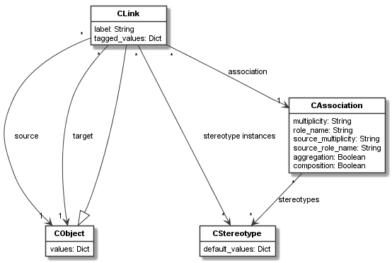

codeable_models.CLink¶
-
class
codeable_models.CLink(association, source_object, target_object, **kwargs)¶ CLinkis used to define object links. Objects can be linked if their respective classes have an association. When linking objects, the association definitions are checked for correctness. For example, linking three objects to an object in a 1:1 multiplicity relation, yields an exception.Superclasses:
CBundlable- Parameters
association (CAssociation) – The association that defines the link and is the classifier of this link.
source_object (CObject) – The object from which a link to another object shall be created; must be an instance of the respective class in the association.
target_object (CObject) – The object to which a link to another object shall be created; must be an instance of the respective class in the association.
**kwargs –
Pass in any kwargs acceptable to superclasses. In addition
CLinkacceptsstereotype_instances:stereotype_instances:Any
CStereotypeextending the association of this class can be defined on the link as a stereotype instance. That is, the list of stereotypes on the association defines the possible stereotypes instances of the link. The kwarg accepts a list of stereotype instances or a single stereotype instance as argument.
Examples:
The following defines for two cart objects links from the cart to its items via the
add_links()function. It uses a role name to determine the correct association and association direction:new_links = add_links({cart1: [item1, item2], cart2: [item3, item4, item5]}, role_name="item in cart")
The list of created
CLinkobjects is returned.The same links could be defined using
add_linksonCObject:new_links_1 = cart1.add_links([item1, item2], role_name="item in cart") new_links_2 = cart2.add_links([item3, item4, item5], role_name="item in cart")
Both calls also return the list of created
CLinkobjects.Main Relations:
The main relations of
CLinkare shown in the figure below.Each object can be source or target of a link. Links are only valid, if there is an association between the classes of the objects to be linked (and multiplicities are correctly set on these associations).
The association is the classifier of the link (thus it inherits from
CClassifier), and the link is treated as an instance of the association (thus it inherits fromCObject).Links can have stereotype instances of the stereotypes defined for the
CAssociationof the link.-
delete()¶ Delete the link, delete it from source and target, and delete its stereotype instances. Calls
delete()on superclass.- Returns
None
-
delete_tagged_value(name, stereotype=None)¶ Delete tagged value of a stereotype attribute with the given
name. Optionally the stereotype to consider can be specified. This is needed, if one or more attributes of the same name are defined on the inheritance hierarchy. Then a shadowed attribute can be accessed by specifying its stereotype.- Parameters
name – The name of the attribute.
stereotype – The optional stereotype on which the attribute is defined.
- Returns
Value of the attribute.
- Return type
Supported Attribute Types
-
get_opposite_object(cobject)¶ Given an object, this method returns the opposite in the link, i.e. the source if
objectis the target, and vice versa. Raises an exception ifobjectis neither source nor target.- Parameters
cobject – The object from which we want to get the opposite in the link.
- Returns
The opposite object.
- Return type
-
get_tagged_value(name, stereotype=None)¶ Get the tagged value of a stereotype attribute with the given
name. Optionally the stereotype to consider can be specified. This is needed, if one or more attributes of the same name are defined on the inheritance hierarchy. Then a shadowed attribute can be accessed by specifying its stereotype.- Parameters
name – The name of the attribute.
stereotype – The optional stereotype on which the attribute is defined.
- Returns
Value of the attribute.
- Return type
Supported Attribute Types
-
is_class_link()¶ Returns
Trueif this is a link between classes (class objects), elseFalse.- Returns
Result of the check.
- Return type
bool
-
property
role_name¶ Getter for the (target) role name of this link.
- Type
str
-
set_tagged_value(name, value, stereotype=None)¶ Set the tagged value of a stereotype attribute with the given
nametovalue. Optionally the stereotype to consider can be specified. This is needed, if one or more attributes of the same name are defined on the inheritance hierarchy. Then a shadowed attribute can be accessed by specifying its stereotype.- Parameters
name – The name of the attribute.
value – The new value.
stereotype – The optional stereotype on which the attribute is defined.
- Returns
None
-
property
source_role_name¶ Getter for the source role name of this link.
- Type
str
-
property
stereotype_instances¶ Getter to get and setter to set the stereotype instances of this link.
The stereotype instances must be stereotypes extending the association of the link.
The setter takes a list of stereotype instances or a single stereotype instance as argument. The getter always returns a list.
- Type
list[CStereotype]|CStereotype
-
property
tagged_values¶ Getter for getting all tagged values of the link using a dict, and setter of setting all tagged values of the link based on a dict. The dict uses key/value pairs. The value types must conform to the types defined for the attributes.
- Type
dict[str, value]